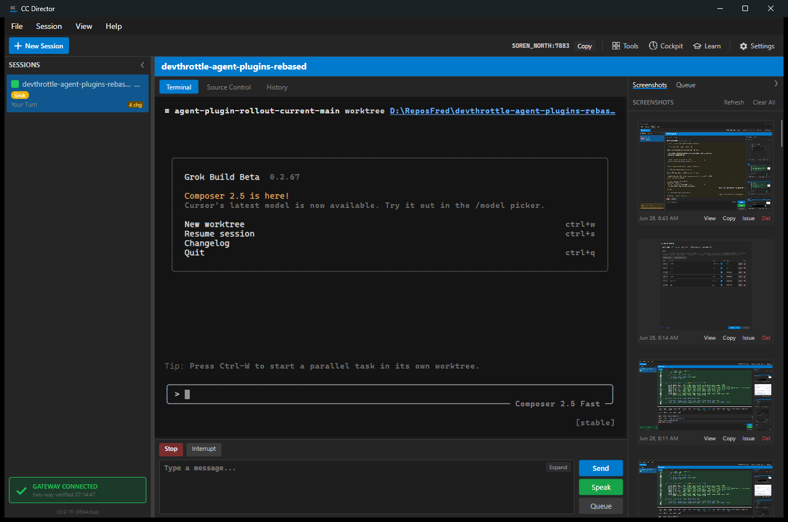

PASS.
Grok is now represented by GrokAgentPlugin instead of the generic
BuiltInAgentPlugin adapter. The plugin owns Grok settings metadata,
executable detection candidates, validation arguments, transcript-file history
metadata, launch metadata, presets, agent construction, and the Grok driver binding.
The plugin remains data/launch/driver only. Grok does not add or own any Director UI tab.
src/CcDirector.Core/AgentPlugins/GrokAgentPlugin.cssrc/CcDirector.Core/AgentPlugins/AgentPluginRegistry.cssrc/CcDirector.Core.Tests/AgentPlugins/AgentPluginRegistryTests.csdotnet test src\CcDirector.Core.Tests\CcDirector.Core.Tests.csproj --filter "FullyQualifiedName~AgentPluginRegistryTests" /m:1 /nodeReuse:false Passed! - Failed: 0, Passed: 30, Skipped: 0, Total: 30
dotnet build src\CcDirector.Avalonia\CcDirector.Avalonia.csproj /m:1 /nodeReuse:false Build succeeded. 0 Warning(s) 0 Error(s)
Built isolated slot cc-director15.exe from this branch, launched it
through the scheduled-task slot path, and created a Grok session through
POST /sessions.
15http://127.0.0.1:7883/healthz returned status=okfdab0af4-486a-4bd5-88f0-4d8cb837acd1GrokCancel, Interrupt
screenshots/settings-catalog.json contains the Grok catalog entry with historyProvider=TranscriptFile, supportsPreassignedSessionId=false, supportsStudioMode=false, and driver capabilities Cancel/Interrupt.screenshots/grok-session-created.json contains the create response from POST /sessions.screenshots/grok-session.json contains the live Grok session response from /sessions/{id}.